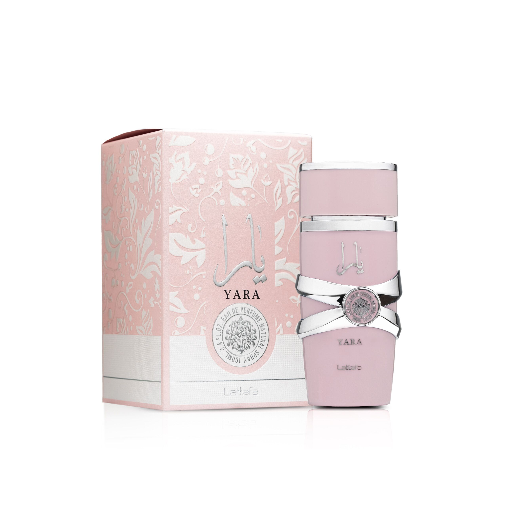
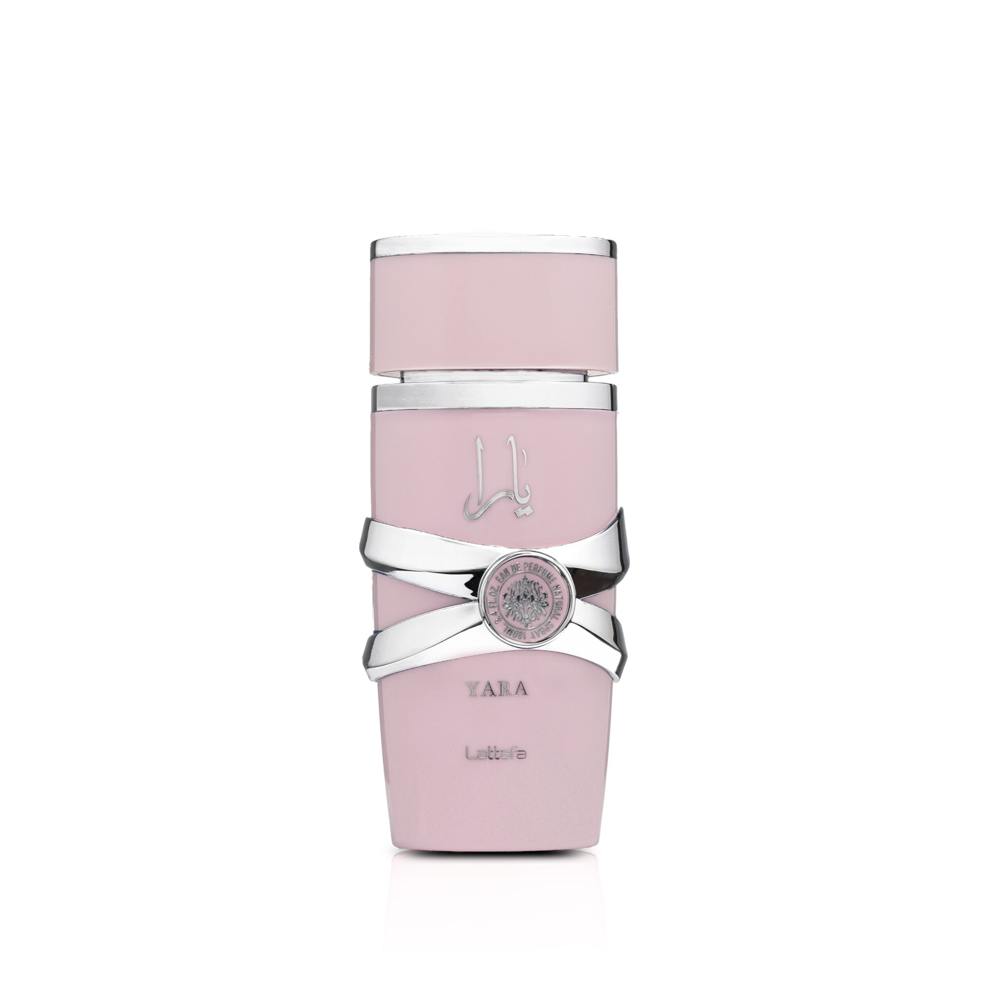
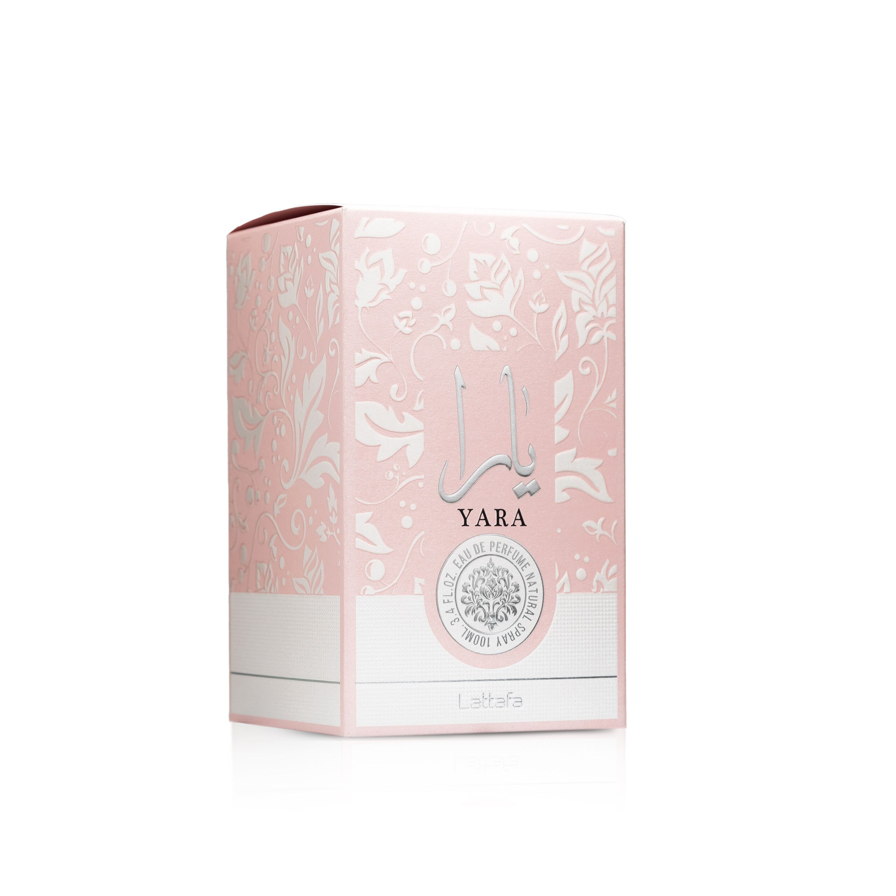

Sweet, creamy, and unapologetically feminine — Lattafa Yara has become one of the most-loved Arabic fragrances of recent years, and it's easy to understand why.
Launched in 2020, Yara opens with orchid, heliotrope, and tangerine Fragrantica — a soft, slightly powdery floral opening with just enough citrus brightness to keep things feeling fresh. The heart moves into a lush gourmand accord layered with tropical fruits, building the creamy, dessert-like warmth that has made this fragrance so recognisable. The base settles into vanilla, musk, and sandalwood Fragrantica — smooth, comforting, and skin-close in a way that feels like a second skin rather than a statement.
This is an ultra-feminine fragrance that is fruity, floral, and slightly powdery — think warm vanilla custard with tropical fruits and a swirl of fluffy whipped cream. FragranceX It's the kind of scent that gets noticed without demanding attention, draws compliments without being loud, and works equally well for daytime wear or a casual evening out.
Vegan-friendly and cruelty-free Amazon, housed in a pale pink bottle that looks as good on a dressing table as it smells. At this price, it's one of the finest sweet-floral fragrances you can buy.
WHY WE CARRY THIS
Yara is one of those fragrances that just keeps coming up. Ask anyone who's tried it and they'll tell you the same thing — it smells more expensive than it is, it gets compliments, and once it's in your rotation it doesn't leave.
The gourmand-tropical heart is what makes it. It's sweet without being cloying, warm without being heavy, and feminine without being one-note. The dry-down is genuinely lovely — soft, creamy, and the kind of scent that lingers on skin and clothing in the best possible way.
We carry it because it's a crowd-pleaser in the truest sense — not generic, but immediately appealing to almost everyone who smells it. For the price, it's an easy recommendation.
| Product Name | Lattafa Yara |
| Concentration | Eau de Parfum (EDP) |
| Size | 100ml |
| Fragrance Family | Oriental Vanilla / Amber Floral |
| Top Notes | Orchid, Heliotrope, Tangerine |
| Heart Notes | Gourmand Accord, Tropical Fruits |
| Base Notes | Vanilla, Musk, Sandalwood |
| Longevity | 4–6 hours |
| Projection | Moderate |
| Best For | Daytime wear, spring/summer, casual evenings |
| Gender | Women |
| Vegan & Cruelty-Free | Yes |
| Launched | 2020 |
| Origin | UAE |